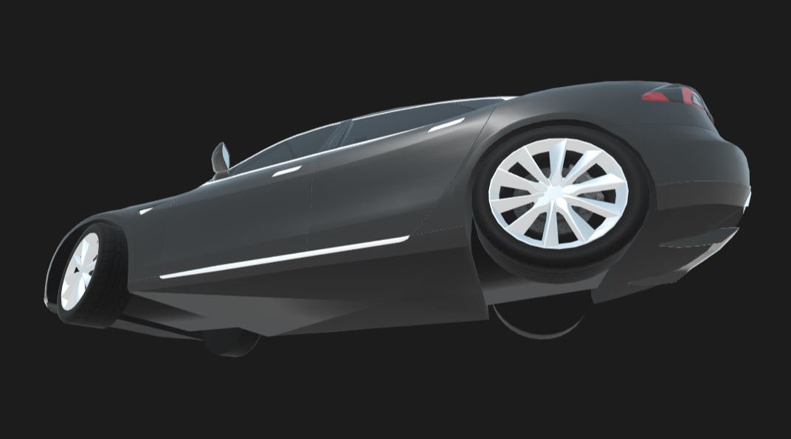

About VeRse
Virtual Reaility shopping platform
Project VeRse is a Virtual Reaility shopping platform, which intergrated with Handler and MART-E to provide an all rounded and boarderless social shopping experience.
VeRse provide 24/7 trustworthy safe environment for user all around the world to run their bussiness and purchase goods with ease!
Prototype
Featuring Function
- VR communication environment
- Transaction UI
- Shopping companion : MART-E chan
- Real-time sign language translator : Handler kun
- 360 Object view
- VR cloth testing
- Map location
- Proximity Translator
- Shopkeeper bot and notification
Mind Map

When we first start, we put our focus on how people get attracted to purchase items. Which leads us to the point of "crowd effect", people will get curious when seeing group of people are focus on an event. Which this efffect can be recreated in VR enviroment.
Then we look in to the diffculties, we found that a multi national VR platfrom will face language barrier and discriminate the sign-language user, such they become one of our target group in our design.
Finally we brainstormed the users communication patten. Including customer to customer, customer to shop owner. Based on this, we found out user can only obtain limited information from this channel. Such our system should provide customer to bot communication to enable the customer to obtain more technical information and customer to stranger to seek other information such a new events or reviews.
Interpret
Point Of View (POV)
| User | Needs/Problem | Insight |
|---|---|---|
| Normal customer - Want to save money - Not familiar with what they buy (e.g. Ben want to buy a phone but don’t know what phone is suitable for him) | - Look for hard to find items, (VR World is infinitely large. Challenges faced when trying to navigate yourself)
- Want to inspect the product carefully before purchase - Complete the shopping as effective as possible - Obtain suggestions from the staff |
- Online shopping
- 3D view of the goods - MART-E shopping list and map guild - Incognito mode |
| - Special need customer(deaf / mute / indecisive)
- Cannot communicate well | - Taking long time to make decision may slow down the business
- Not every physical staff can communicate with special need customer |
- Virtual shopping have no time limit
- Handler can solve the sign language and language barrier issue |
| Shopkeeper/ owner
- Want to maximize profit - Attract more customers - Minimize cost | - Safe platform to shows goods
- Can cater customer enquiries as much as possible - Low operation cost on running store |
- No one can steal from virtual store
- Customers may be disruptive/ cause commotion in store (may lower public image and sales) → toxic customers will be muted or even banned - Introduce MART-E as the store chat bot to answer to customer’s enquiries and orders - Convert to human staff in need. |
After the study, these are the needs/ problem from the user.
- Users need multiple channel to seek information
- Language barrier
- Safe enviroment to display the good
- 24 hours shopping experience
Storyboard

Ideate
These are the functions in our design:
| Feature | Function | Interface |
|---|---|---|
| VR communication Environment | A multi-user communication VR platform powered by Hubs, user can join the area through URL links and able to customize their avater. | |
| Shopping UI | Shop owner can list out the information of each good, as well as the promotion and sales | |
| Shopping companion : MART-E chan | Smart shopping companion powered by MART-E, which is captable to perform voice commanded base searching, price comparsion, online booking, path finding. MART-E chan is implement with VRM model to provide a virtual humanloid communication interface. | |
| Real-time sign language translator : Handler kun | Real-time sign language translator powered by Handler. For sign language user, all the listened speech will be converted into sign-language and present through Handler kun. The motion tracking glove will recorded the user hand gestures and translated into speech with text to speech function. To enable the sign-language user to communicate and blend into this community. | |
| 360 Object view | User can rotate the 3D model freely to inspect the goods in different view, by this shop keeper can shows their good and allow the user to rotate freely, as customer will not able to perform any shoplifting or damage to virtual items. While user can get a better understanding on the goods. |  |
| VR cloth testing | The cloth can mapped to the real person model to see how it looks like on the user. This allows the user to experience how will it looks like and share to other to get comment before they purchase. | |
| Map location | Since the VeRse is huge, user might get lost while shopping, user can call MART-E chan to use the map function to locate and teleport to the destinated shop. | |
| Proximity Translator | To encourage boarderless communication, if user intended to join a communication whereas the oppoent speaking language is not same as user. User can get close to the oppoent to trigger proximity translator, which will automatic translate all the conversation into user's language. To perform multi-lingue communication. | |
| Shopkeeper bot and notification | Shopkeeper bot is a chat bot which can be used to explain the goods' informations to the customer and answer some simple question. To relieve the stress for the human worker and able to serve multiple customers at a time. When the bot cannot answer to a request, it can change to human worker to respond. In such case, a notification will send to the worker phone to inform them to enter VeRse and assist the customer. Such the human worker do not need to be 24 hours online. |
WOW Factors
There are mainly 4 WOW factors in VeRse to make it stands out from other current proudcts.
Multilingual
As a global online shopping center, we need to cater the user from all around the world, many bussiness are lost due to language barrier. Yet in VeRse there is no such thing, proximity translator take care of it and make every mulinational trading smooth.
Handler Kun
Everyone should have the right to use our platform, including disablies. Therefore, Handler kun is here to help to solve the Sign-language translation issue. Such that even mute and hearing impairing user can also enjoy the experience in VeRse. In addition, all the custom hand gesture data can be inherit from the Handler App.
MART-E Chan
To make shopping easier and smarter, MART-E Chan is you shopping companion to bring your experience into next level
1. Voice command: No more typing and clicking. MART-E is an intellgent chat bot accept voice command. If you got question just tell her.
2. Humanloid interface: MART-E Chan is not like Siri or miss Google with no face, MART-E are designed with humanloid body to give facial expression, hand gestures and eye contact when you are talking with her. So you cacn talk to her naturally just like to friend.
3. Map location: Got loss in VeRse, no problem! just tell MART-E chan , she will show you the map and teleport you to there if you want.
4. Smart shopping: As inherit from MART-E App, she can help you to sort the search result with rating and price. Now she can also bookmark the shop you like, perform service booking.
24/7 Trustworthy Shop
Crimes, high labour cost, high overhead cost when running a physical shop. Worry the good will be damage by customer.
-All this will "NOT" happen in VeRse.
-Shoplifting Free enviroment: Since all the good are virtual, nothing can actually be "steal".
-24/7 working bot: Bot can be deploy to handle basic customer request, such that can reduce the human worker working hour and let bot to run the store.
-Infinity space: there are no physical space constrain in VeRse, such owner can run a big showroom with low cost in VeRse easily , but they can't do in realility. Also it take less construction time to build a 3D scene than a physical space.
-People like touching: People always like to touch to test before they purchase, in real shop,many good might got damage due to touch. In internet shopping, customer can't touch, so owner loss bussiness due to that. But in VeRse, item can be implement with physics and allow user to move around freely with out doing any damage.
Evaulation
User-testing
We had demo our design to sereval peoples, these are the feedbacks:
Pros:
- is a merit to able to rotate the object freely
- the translator can bring different user around the world closly together
Cons:
- the text-to-speech is still sounds very robotic, which bring down the experienece
- the graphic quailities are way too low, poor visual element make overall feeling looks "fake", but not "real" in "virtual reality"
- how to handle the nay-sayer in the VR world?
To conclude the completeness have tremendous impact on the overall experience. If visuals, audios are simply not close too normal real life feelings, user will have sense of weird feeling as it mismatch with the nature. As such, to make this design fesible enough to launch to public, we have to refine the graphic and audio to give more smooth experience.
Contribution
In this project, I had worked on:
- Script writing
- Actor and scene shooting
- Text-to-speech and fine tuning with Audacity
- Car stage building
- UI making
- Create MART-E chan VRM model and related animation
Personal Reflection
In project Handler
- I learnt how to use blender to create glb elements.
- I learnt how to use SSSL text to speech powered by IBM to create diffent expression tone
I this project, we aimed to create a better VR communication platform by intergrated with our past projects to solve the diffculties in real-life communication or shopping. With our integration, translator will help to solve the multi-lingue and sign-language issue, there is no pressure for the indecisive customer, there is no shoplifting issue. In terms of functionaility, we have done a good job. Yet, the entire system is not detail enough, for example, the text-to-speech still sound very robitic ,3D model looks too unreal and the cartoon like avater cannot create a human to human like comunication feeling. Which implys we still have rooms to improve.
In addition, our experience on Hubs is, it is kind of fragile.
- It cannot hold more than 128 MB model
- The link to the 3D model in sketchfab might went wrong sometime
- imported glb element always have texture missing issue
- Spoke cannot edit by multi-user at the same time
It might be a good platform to build protoype for single user, but it is really hard to work in a group project.